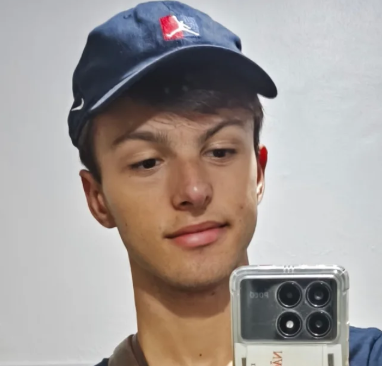

Perfil

Sobre Mim
Sou um desenvolvedor Frontend focado em comunicação audiovisual (UX/UI, Motion e Interfaces), com perfil criativo, analítico e detalhista. Atualmente estudando Programação Web e Aplicativos no Senac RS, sou um entusiasta do aprendizado contínuo. Busco colaborar em projetos Frontend e estou aberto a oportunidades FullStack.
Meus interesses pessoais incluem tecnologia, design, música e esportes, o que contribui para minha criatividade e equilíbrio pessoal.
Minha História
Minha jornada na programação começou de forma simples, com muita curiosidade e vontade de aprender. Ao longo do tempo, desenvolvi habilidades técnicas e soft skills que me permitem criar soluções eficientes e inovadoras.
Meus Valores
Princípios que guiam meu trabalho:
- Qualidade de código
- Colaboração em equipe
- Aprendizado contínuo
- Foco no usuário
- Lifelong learning
Objetivos
Metas para minha carreira:
- Contribuir com projetos open source
- Liderar times de desenvolvimento
- Arquitetar sistemas escaláveis
- Mentorar novos desenvolvedores
- Desenvolver interfaces UX/UI de alta conversão
Interesses
- Frontend
- Design de interfaces, experiência do usuário, animações web, Motion Design
- Backend
- APIs RESTful, arquitetura de microserviços, banco de dados
- DevOps
- CI/CD, containerização, cloud computing
- Comunicação Audiovisual
- UX/UI Strategy, Motion Design, Brand Identity, Direção Criativa
- Comunidade
- Eventos técnicos, compartilhamento de conhecimento, networking, mentoria
Habilidades
| Categoria | Competências |
|---|---|
| Soft Skills & Estratégia |
|
| Hard Skills & Tech |
|
| Aprendendo & Interesses |
|